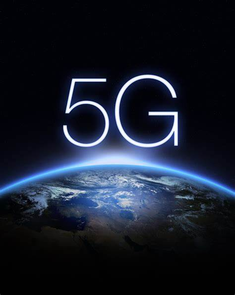
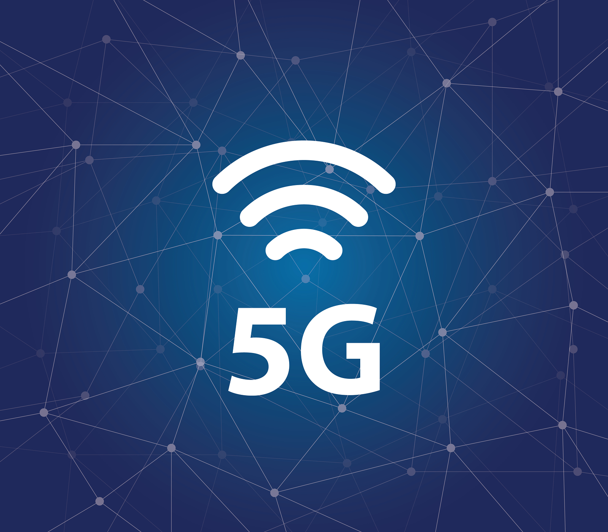
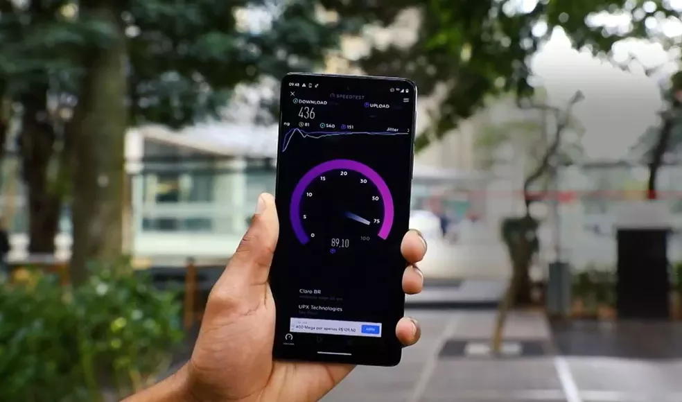

O que é 5G?
5G é a quinta geração de tecnologias de comunicação móvel. Ele promete oferecer velocidades de transferência de dados significativamente mais rápidas, maior capacidade de conexão simultânea e menor latência do que as gerações anteriores. Isso permitirá aplicações e serviços que permitiram alta velocidade, como jogos online, realidade virtual e inteligência artificial.

Diferença entre 4G e 5G
A principal diferença entre o 4G e o 5G é a velocidade. O 5G é projetado para ser até 100 vezes mais rápido que o 4G. Isso significa que as transferências de dados podem ser feitas em questão de segundos, enquanto que com um 4G, pode levar minutos ou até as mesmas horas. Isso permite aos usuários fazer download de filmes e jogos em alta definição, transmitir vídeos em tempo real e acessar aplicativos mais intensivos em termos de banda larga.

aplicações utéis do 5G
A tecnologia 5G também pode ser usada para resolver problemas de falta de acesso à internet em regiões remotas. Com o 5G, é possível criar redes de comunicação mais flexíveis e escaláveis, que podem ser adaptadas para atender às necessidades das comunidades remotas. Isso permitiria que essas áreas acessassem aplicativos e serviços que antes eram inacessíveis, como educação e saúde à distância. Além disso, o 5G também pode ser usado para conectar dispositivos IoT (Internet das coisas) como sensores e câmeras, para monitoramento e gerenciamento de ativos, eficiência e segurança.
